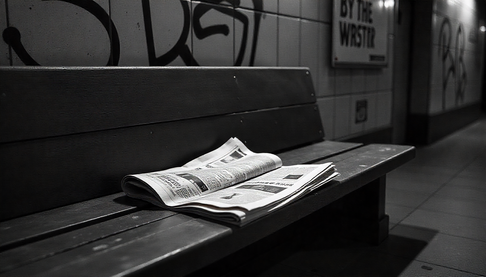

Dentro de la sala de máquinas

Este recurso se ha generado a partir de IA de Freepik
Alguna vez te has preguntado cómo se decide qué noticias salen en primera plana y cuáles no? La respuesta está en el Consejo de Redacción. Piensa en él como el "cuartel general" o la sala de máquinas donde se toman las decisiones cruciales del periódico.
Es el cerebro colectivo que se asegura de que cada número sea coherente, interesante y esté a tiempo.
¿Qué es un Consejo de Redacción?
En pocas palabras, es la reunión periódica (semanal o diaria, dependiendo de la frecuencia del periódico) donde se juntan los responsables de las diferentes secciones para planificar, debatir y supervisar el contenido que se va a publicar.
No es sólo una charla; es un debate dinámico donde las ideas chocan, se aprueban temas y se resuelven problemas.
¿Quién lo compone?
El consejo de redacción lo forman los "pesos pesados" del equipo. En un periódico real, esto incluiría al director, los subdirectores y los jefes de sección. En nuestro proyecto de instituto, seremos nosotros: los líderes de cada área temática.
Los participantes clave suelen ser:
El/La Director/a o Editor/a Jefe: El líder del barco.
Jefes de Sección: Los responsables de áreas como "Deportes", "Cultura", "Actualidad", "Opinión", etc.
Editor/a Gráfico/a o de Diseño: La persona que se asegura de que el periódico se vea bien (fotos, infografías, maquetación).
¿Qué funciones tiene?
El consejo de redacción es donde ocurre la magia (y el trabajo duro). Sus funciones principales son:
Planificación del Contenido: Decidir qué temas se cubrirán en el próximo número, a quién entrevistar y qué enfoque darle a cada noticia.
Control de Calidad: Revisar que los artículos sean precisos, estén bien escritos y respeten la línea editorial del periódico (los valores y el estilo que hemos acordado).
Gestión del Tiempo (Deadlines): Asegurarse de que todo el mundo sabe cuándo debe entregar su trabajo para poder cumplir con la fecha de publicación.
Resolución de Conflictos: Debatir y decidir qué hacer cuando hay opiniones divididas sobre un tema polémico.
Diferentes Roles que puedes jugar
En nuestro proyecto, tú puedes asumir uno de estos roles clave y sentarte en la mesa del consejo de redacción:
Jefe/a de Redacción: Se encarga de coordinar todo el trabajo y como representante de la línea editorial puede ser el responsable de escribir las editoriales del mismo.
Periodista/Redactor-a: (El rol más común) Tu misión es buscar historias, investigar, realizar entrevistas y escribir los artículos. Eres quien está en la calle, captando la noticia.
Editor-a/Corrector-a de Estilo: El "guardián de la gramática". Te encargas de pulir los textos, corregir erratas y asegurar que todos los artículos tengan un tono y estilo coherente.
Diseñador-a/Maquetador-a (o Editor-a Gráfico-a): Eres el artista visual. Te encargas de que el periódico no sólo se lea bien, sino que se vea increíble. Decides dónde van las fotos, cómo distribuir el texto y el diseño final de cada página.
Fotógrafo-a/Reportero-a Gráfico-a: Capturas las imágenes que acompañan a las historias. Una buena foto puede contar una historia entera por sí sola.
En resumen, el consejo de redacción es donde vuestras ideas toman forma y se convierten en un producto real que la gente querrá leer.
¡Es vuestro momento de tomar las riendas!